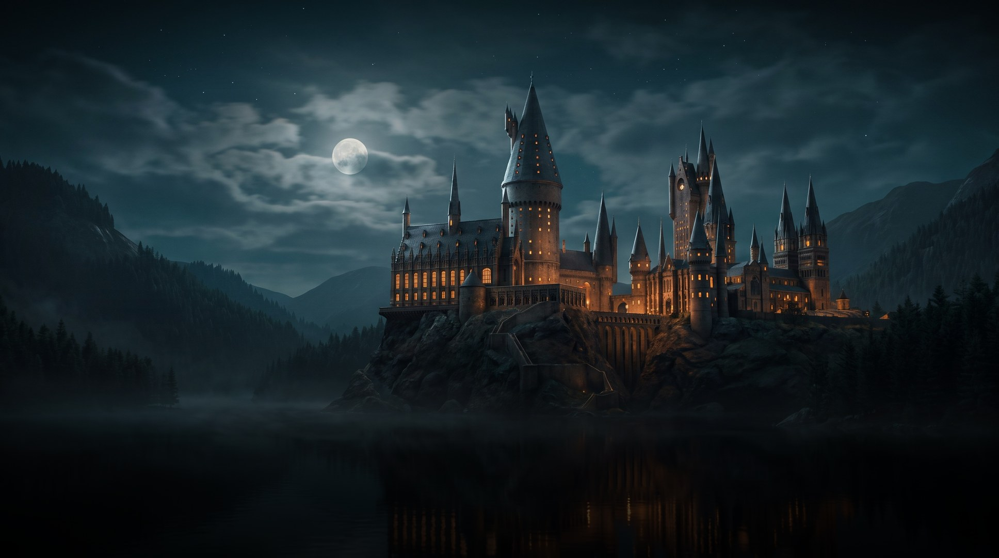
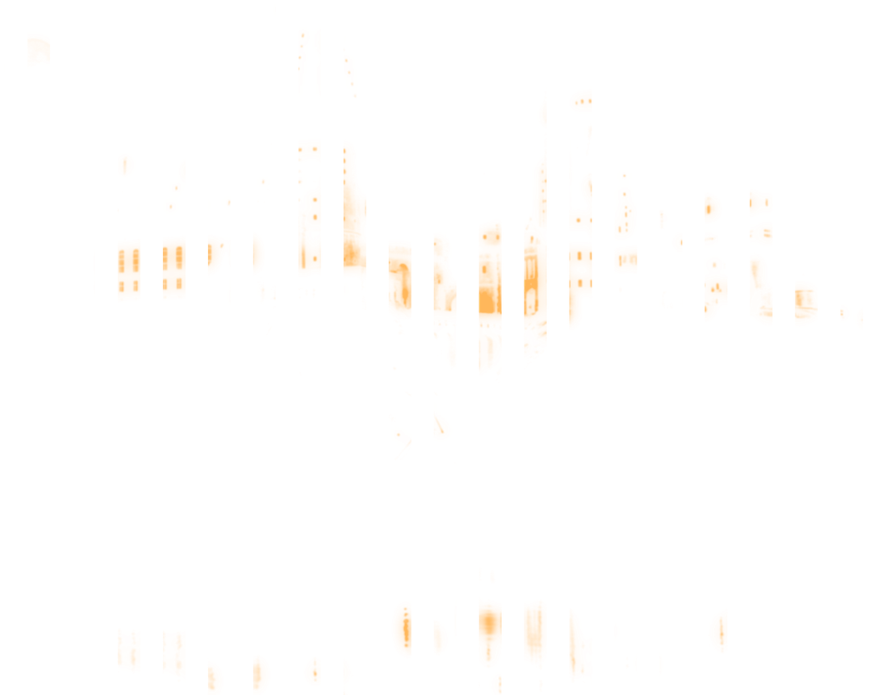
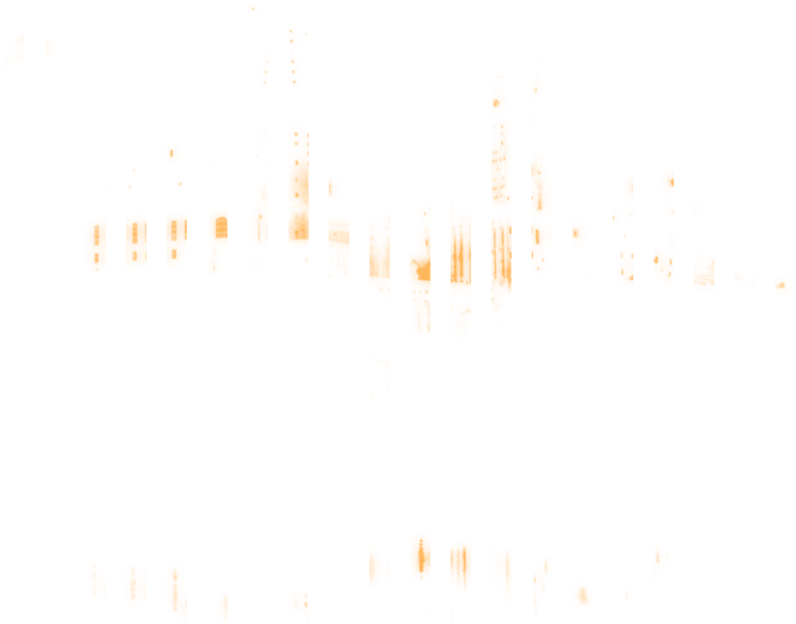
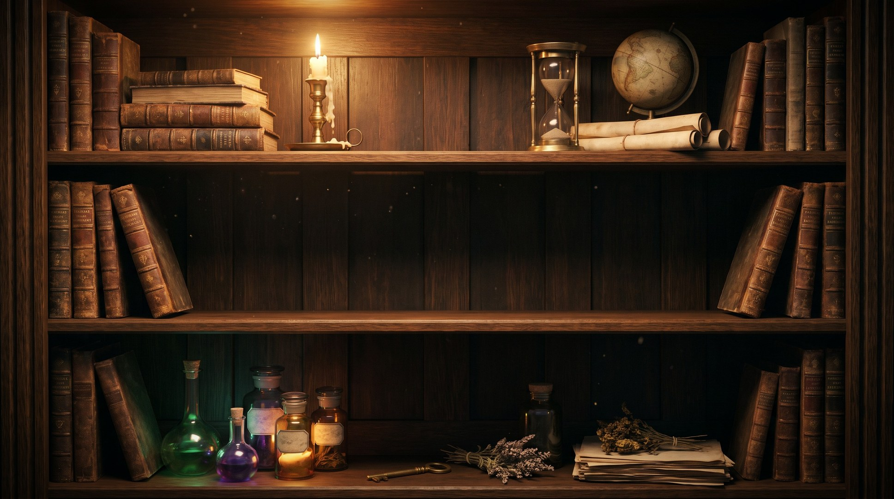
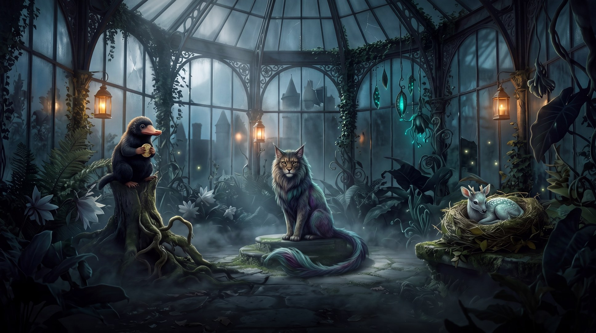

Customise
The Library

Home
← → browse · OK watch on JioHotstar
The Greenhouse

The Library
← → explore · OK watch on JioHotstar
Customise your castle
Pick up to six apps for the dock, in the order you want them, then where the films open.
The dock
The films open in
Done
Start again